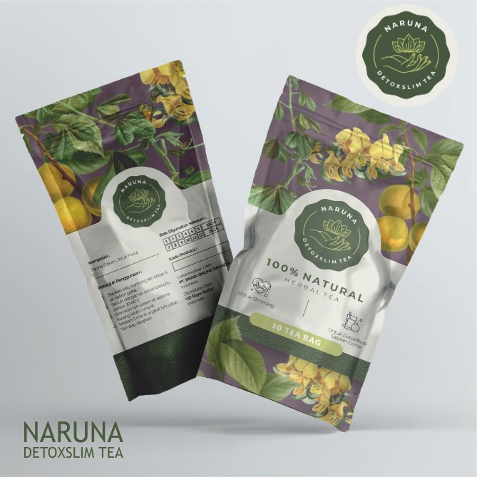
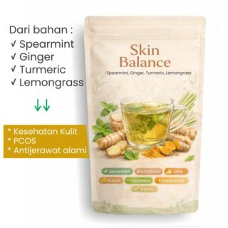
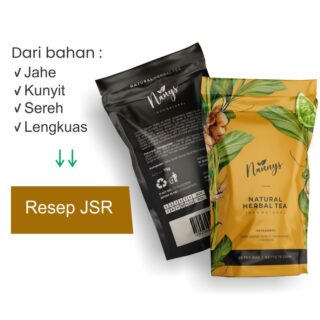
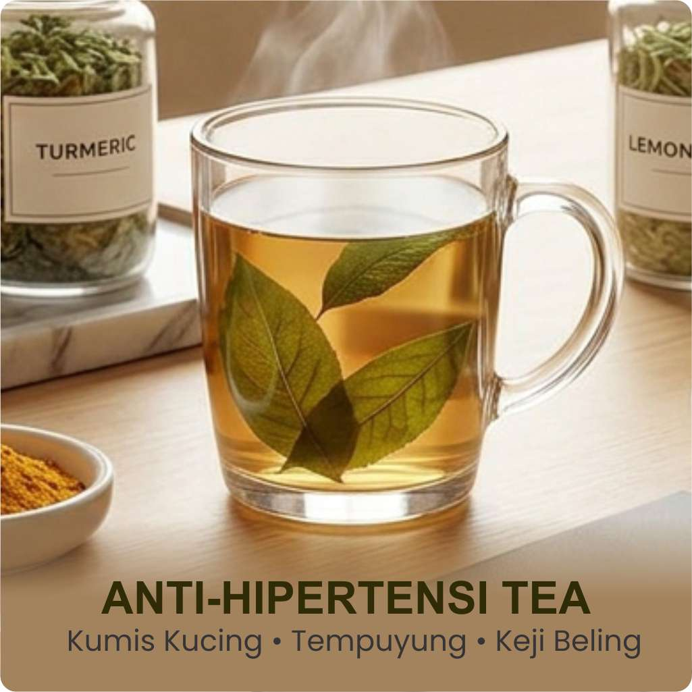
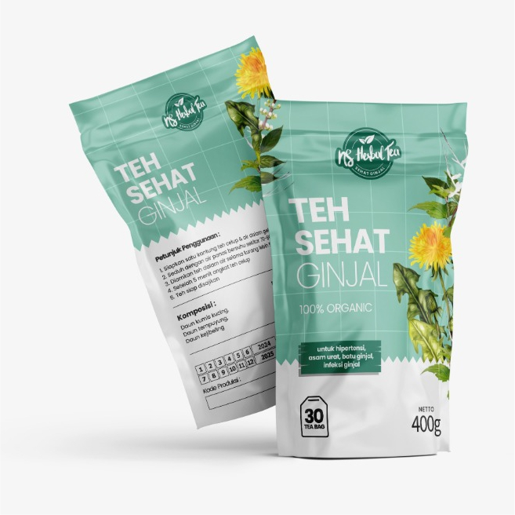
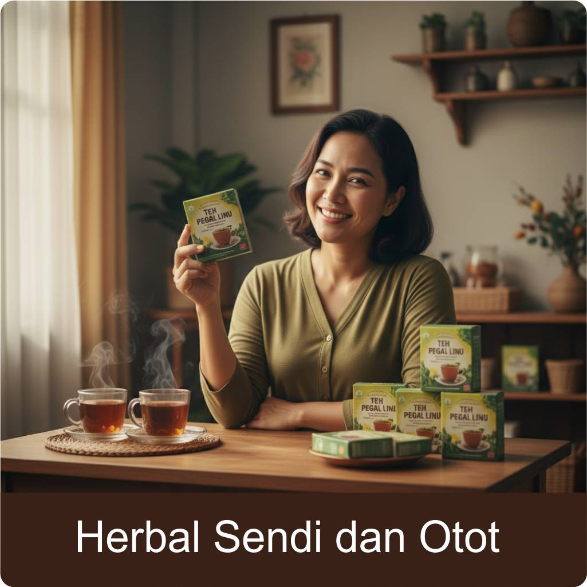

Wujudkan Brand Teh Celup Herbal Anda Sendiri dengan Layanan Maklon Terpercaya
Proses mudah, Legalitas lengkap, Formulasi sesuai keinginan Anda, Mulai dengan modal terjangkau.
Formula Custom
Kemasan Kekinian
Produksi Terstandar
Tentang Kami
Mengenal Profil, Sejarah, dan Dedikasi Sari Selaras dalam Industri Teh Celup Herbal


Punya Brand Teh Celup Sendiri Tidak Harus Bikin Pabrik
Karena biaya operasionalnya bersifat fixed cost, Anda tidak perlu menanggung investasi mesin maupun tenaga produksi.
Teh celup herbal adalah solusi gaya hidup sehat yang praktis. Dengan tren konsumsi herbal yang terus meningkat, Anda bisa memiliki produk dengan merek sendiri tanpa harus pusing memikirkan mesin dan tenaga produksi. Seluruh proses dari bahan mentah hingga produk jadi kami kerjakan terintegrasi sehingga kualitasnya terjaga.
- Fokus Pengembangan Brand & Marketing: Urusan bahan baku, peracikan, hingga pengemasan kami yang tangani.
- Dapat HPP Pabrik Lebih Ekonomis: Efisiensi biaya berkat jaringan supplier bahan herbal terverifikasi.
- Formulasi Berbasis Resep Saintifik: Dikembangkan bersama tenaga farmasi berpengalaman sesuai kebutuhan konsumen Anda.
- Pendampingan Legalitas & Kemasan: Siap membantu mulai dari konsep desain hingga pendampingan perizinan edar.
Perjalanan Dedikasi Menghadirkan Teh Herbal Nusantara
UMKM Sari Selaras berakar dari tradisi racikan herbal Yogyakarta, berlokasi di Bumen Wetan Gang Asoka, Baturetno, Banguntapan, Bantul. Berawal dari kepedulian mendalam terhadap potensi rempah nusantara dan kebutuhan masyarakat urban akan minuman kesehatan yang praktis tanpa ampas, Sari Selaras memulai langkah dengan memproduksi teh celup herbal alami berbahan dasar daun teh pilihan dan rimpang lokal.
Seiring meningkatnya kepercayaan pasar dan komitmen mutu di bawah pengawasan tenaga farmasi berpengalaman, Sari Selaras berkembang memperluas lini bisnis menjadi Rumah Produksi & Jasa Maklon Teh Celup Herbal terintegrasi. Kini, Sari Selaras telah mendampingi puluhan pengusaha dan brand lokal menciptakan produk teh herbal berkualitas tinggi dengan standar mesin otomatis, formula saintifik, dan legalitas edar lengkap.
Tonggak Capaian Kami
-
Berakar di Yogyakarta Rumah produksi strategis di Banguntapan, Bantul dengan jaringan petani simplisia terverifikasi.
-
Didampingi Tenaga Farmasi Setiap racikan formula berbasis khasiat saintifik dan pengawasan mutu higienis ketat.
-
Mesin Otomatis & Skala Fleksibel Kapasitas ribuan kantung teh/hari dengan MOQ ramah bagi UMKM dan pebisnis pemula.
Jasa Maklon Teh Celup Herbal
Teh celup herbal adalah solusi bagi masyarakat suka minum herbal tetapi praktis dalam penyajian. Dengan jasa maklon teh celup herbal, Anda bisa membuat produk ini tanpa harus investasi sarana produksi — cukup hubungi kami untuk mewujudkan ide Anda.
Maklon Teh Celup Herbal
Produksi teh celup single-ingredient maupun racikan multi-herbal (tea bag & tag/benang) dengan penyeduhan praktis yang menjaga aroma dan khasiat alami.
R&D Formulasi Custom
Pengembangan formula khusus sesuai target pasar Anda (Diet/Slimming, Kesehatan Kulit/Jerawat, Promil/PCOS, Jamu Saintifik, hingga Teh Relaksasi).
Pengemasan & Alufoil Custom
Layanan pengemasan primer kantong aluminium foil higienis serta kemasan sekunder berupa Standing Pouch, Inner Box (Dus) full printing, maupun Karton sesuai identitas brand Anda.
Desain Kemasan Produk
Belum punya desain? Tim kami siap membantu merancang konsep visual kemasan yang menarik, profesional, dan sesuai standar regulasi pelabelan produk.
Quality Control Terstandar
Setiap tahapan mulai dari pemilihan simplisia, pengeringan, penggilingan, pencampuran, hingga pengemasan diawasi ketat oleh tenaga farmasi profesional.
Konsultasi Legalitas Produk
Pendampingan dokumen dan spesifikasi teknis produk untuk mendukung pengurusan izin edar (P-IRT / BPOM / Halal) agar produk Anda aman dipasarkan luas.
Keunggulan Maklon di Sari Selaras
Dari bahan mentah hingga menjadi produk jadi kami kerjakan terintegrasi — sehingga kualitasnya terjaga


Struktur Organisasi
Tim profesional Sari Selaras yang berdedikasi memastikan setiap produk maklon teh celup herbal dikerjakan dengan standar kualitas terbaik
Owner (Pemilik)
Pimpinan Tertinggi Perusahaan
Supervisor
Koordinator Operasional & Produksi
Staf Produksi
Operator Mesin & Perakitan
Staf Quality Control (QC)
Pemeriksaan & Penjaminan Mutu
Staf Gudang & Pengemasan
Inventori, Packing & Logistik
Staf Admin & Pemasaran
Administrasi, Keuangan & Pesanan
Contoh Produk yang Telah Dibuat
Beragam produk teh celup herbal berbasis resep saintifik yang dibutuhkan masyarakat


Detox-Slim & Slimming Tea
Kombinasi daun jati belanda, teh hijau, asam gelugur, dan rempah pilihan untuk membantu program diet sehat dan melancarkan pencernaan.


Spearmint & Kesehatan Kulit
Formulasi khusus daun spearmint, chamomile, dan herbal antioksidan untuk membantu kesehatan kulit, jerawat hormonal, dan keseimbangan PCOS.


Herbal Racikan JSR
Racikan rimpang (jahe, kunyit, sereh, lengkuas) dalam bentuk teh celup praktis tanpa ampas untuk menjaga daya tahan tubuh harian.


Anti-Hipertensi & Anti-Diabetes
Teh celup kumis kucing, tempuyung, keji beling yang diformulasikan untuk membantu menjaga tekanan darah dan kadar gula darah.


Teh Hijau, Teh Hitam & Bunga Telang
Single-origin tea dan flower tea blend (rosella, telang, melati, krisan) dengan aroma autentik untuk segmen kafe maupun ritel.


Kesehatan Sendi & Kesegaran Tubuh
Formula herbal khusus untuk kesehatan sendi/otot serta teh daun sirih & pandan untuk membantu mengurangi bau badan dan bau mulut.
Pilihan Kemasan Produk
Tersedia kemasan standing pouch, box full printing, dan karton — sesuaikan dengan identitas dan target pasar brand Anda
Standing Pouch
Kemasan pouch berdiri dengan stiker label brand. Praktis dan ramah biaya untuk uji pasar.
Box Full Printing
Dus cetak full color custom desain. Tampilan eksklusif siap apotek, ritel modern, & marketplace.
Karton
Kemasan karton kokoh untuk kemasan luar maupun dus pengaman produk.
Realisasikan Produk Anda Bersama Kami
Manfaatkan jasa maklon teh celup herbal untuk membuat produk dengan merk Anda sendiri.
Hubungi WA KamiHubungi & Kunjungi Rumah Produksi Kami
Siap mengubah ide teh herbal menjadi produk brand Anda sendiri? Konsultasikan sekarang
Rumah Produksi
Bumen Wetan Gang Asoka RT 09, Baturetno, Kec. Banguntapan, Kab. Bantul, Daerah Istimewa Yogyakarta
Buka di Google MapsJam Pelayanan
08:00 - 16:00 WIB